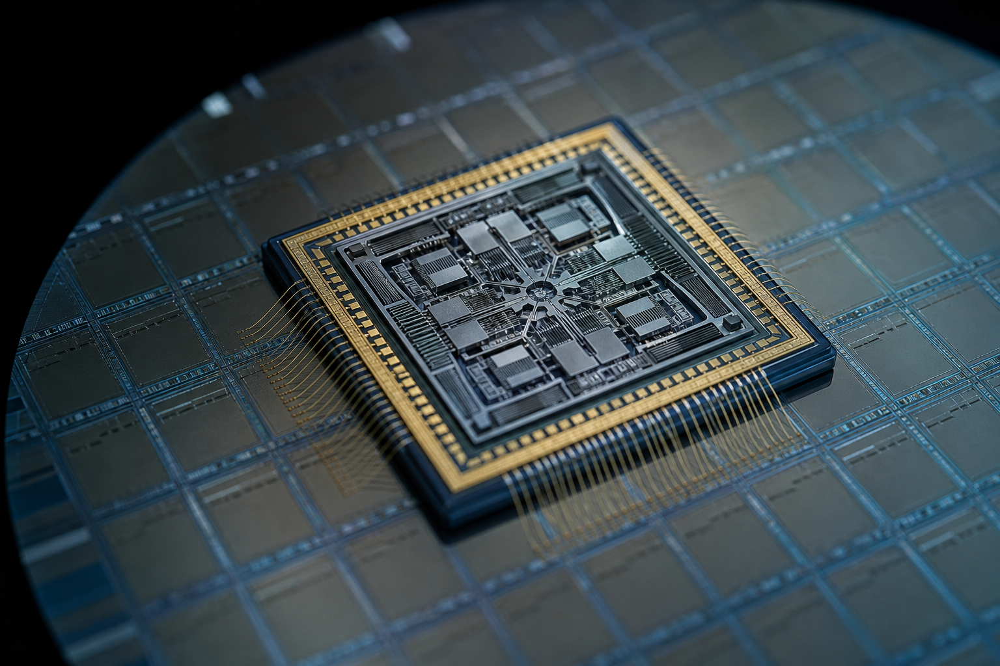
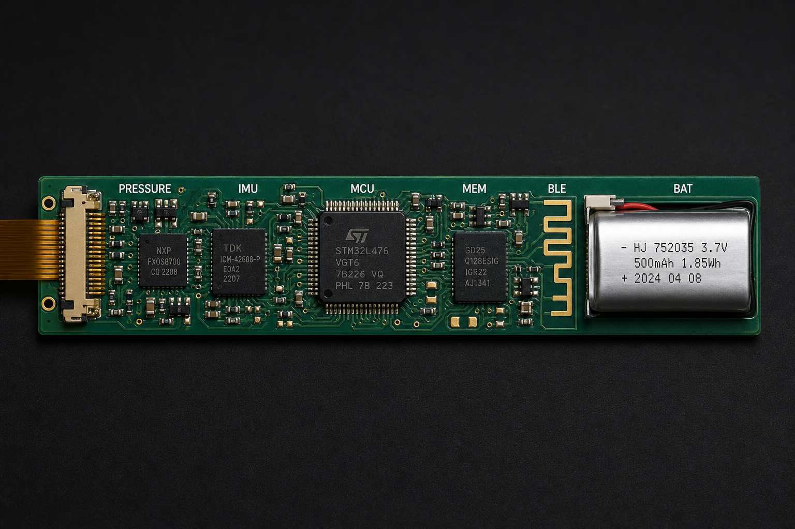

01
Gyroscope
Angular velocity about three axes. Used for handle rotation, face stability, and the difference between a flat drive and a brushed finish.

Wearable science / Multi-sensor
SmartGrip products integrate an inertial measurement unit and a pressure array in the same handle. The sensors calibrate one another so a swing can be described as motion and as a hand event at the same time.
Functional integration
Everyday objects already hide MEMS devices — phones, watches, aircraft. Micro-electromechanical systems shrink mechanical sensing onto a chip. SmartGrip uses that density so a 70 mm capsule can hold acceleration, rotation, pressure, time, and a radio.
Each sensor is useful. The system is the point: gyroscope + accelerometer describe a vector; pressure zones describe how the hand produced it; the MCU keeps a shared clock so the two stories stay aligned.
Angular velocity about three axes. Used for handle rotation, face stability, and the difference between a flat drive and a brushed finish.
Linear acceleration including gravity. Used to estimate swing intensity, impact transients, and to help stabilize gyro drift.
Multi-zone force around the grip. Used for stability, left–right bias, and how the hand changes before and after contact.
A shared sample clock on the MCU, then Bluetooth Low Energy to the phone. Features can be extracted on-device to save energy.
Sensor science
A gyroscope observes change in orientation about x, y, and z. Angular speed is not the same as linear speed: without rotation the gyro reads near zero even if the racket is flying forward.
If the handle rotates on one axis while the others stay quiet, that axis is the story — a rolling serve, a late wrist, a face that opens. Consumer MEMS gyros typically use Coriolis force on an oscillating mass rather than a spinning wheel.
Output · deg/s
Illustrative handle rates during a forehand. Not a player record.
An accelerometer measures both the acceleration of the handle and the gravitational field. Gravity changes slowly, so it is a useful reference for leveling and for helping a gyro keep a usable attitude estimate.
Motion acceleration can be integrated — carefully, with constraints — toward velocity and path. Impact shows up as a sharp transient. SmartGrip treats handle speed as an estimate, not a radar reading of the ball.
Output · g
A lone force sensor can say “harder” or “softer.” A wrap of zones can say where. SmartGrip’s concept layer is a flexible circuit around the foam: gold traces, multiple cells, sampled in sync with the IMU.
That is how the system looks for a death-grip on the serve, a slack eastern grip that collapses on the backhand, or a pressure spike that arrives after contact instead of before.
Heel pad — primary stability zone for a continental grip.
Gyroscopes give direction of rotation. Accelerometers give acceleration. Together they approximate a motion vector. Pressure gives the human cause. Time turns the vector into a stroke.
On-device, a complementary or Madgwick-style filter keeps a rough attitude. Features — peak rate, impact time, pressure centroid — are extracted before Bluetooth, so a full session can survive on a small cell.
Pipeline
Physical motion → sensors → raw frames → MCU filter → feature extract → BLE → app → analytics → player language
Tennis applications
The same pairing that a running watch uses for cadence and oscillation is pointed at strokes. Names stay honest: estimated swing speed, experimental stroke class, conceptual racket match.
Handle velocity is inferred from inertial data and a geometric model of racket length. It is not ball speed. Ball speed depends on impact location, stringbed, incoming ball, and energy transfer the handle cannot see directly.
First-generation claim: estimate swing speed. Future work: calibrate against radar or high-speed video.
Gyro channels around contact describe whether the face stayed quiet or rolled. Combined with impact transients on the accelerometer, this is a way to talk about late opening or brushing without needing a camera on every ball.
Stability is the opposite of chaotic zone-to-zone change. A high score means the pressure centroid stayed coherent through the swing. A drop late in a session is one of the more useful fatigue signals in the concept.
Forehand, backhand, and serve produce different rotation signatures and different pressure maps. The prototype treats classification as a hypothesis to test against repeated swings and, later, video sync. Mislabels are expected in v1.
Architecture
Honesty in the numbers
